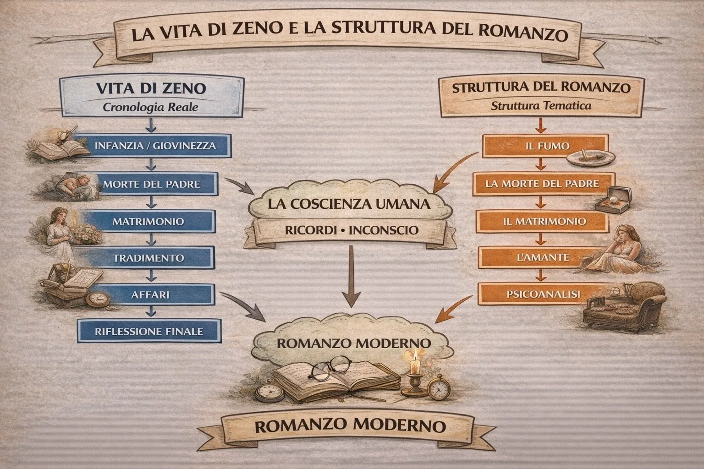
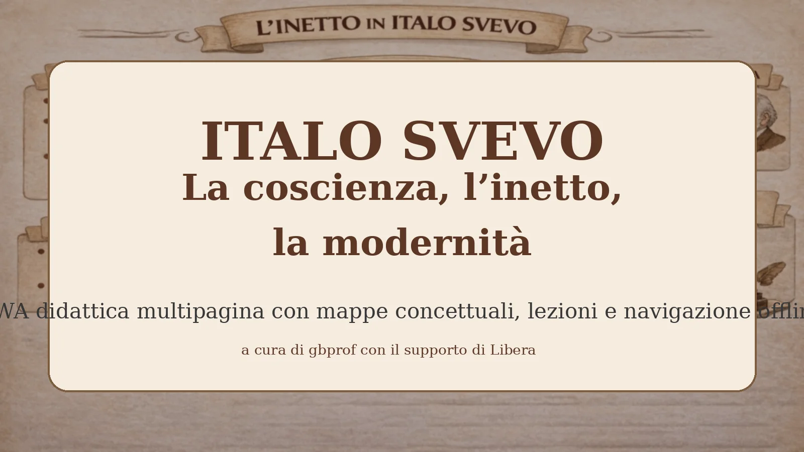
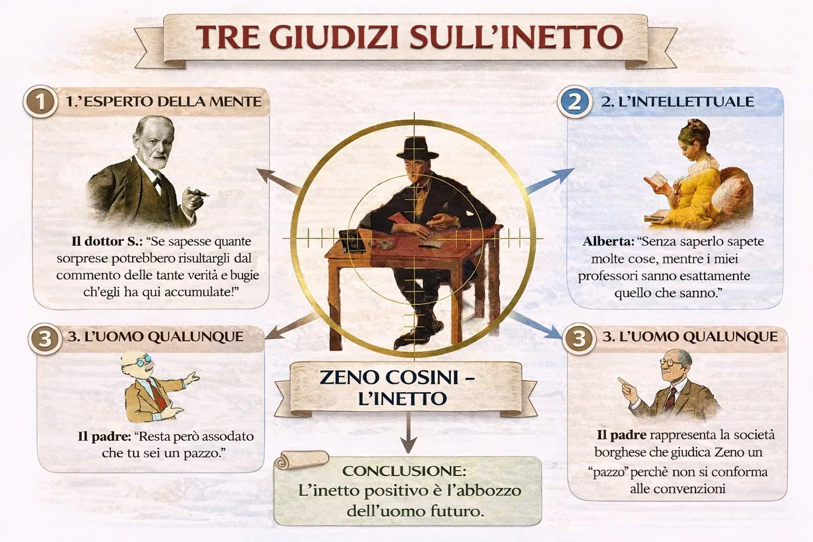
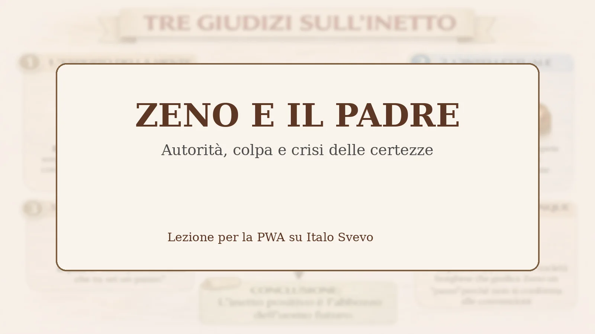
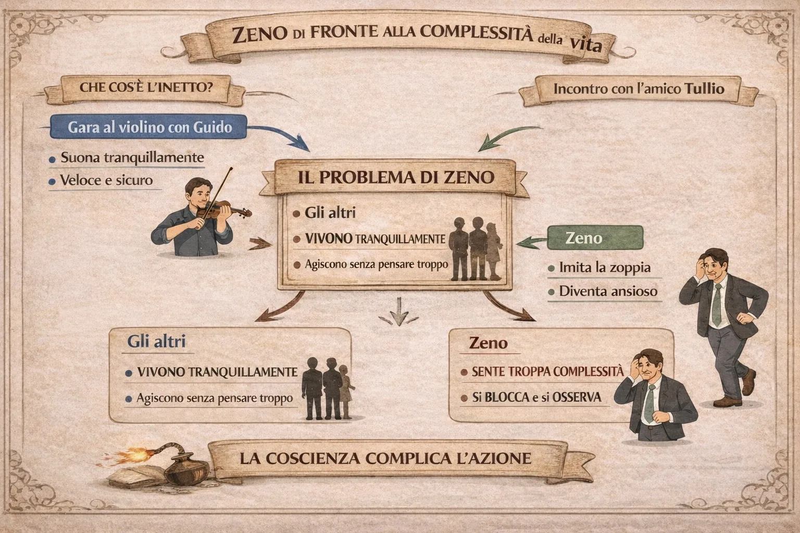
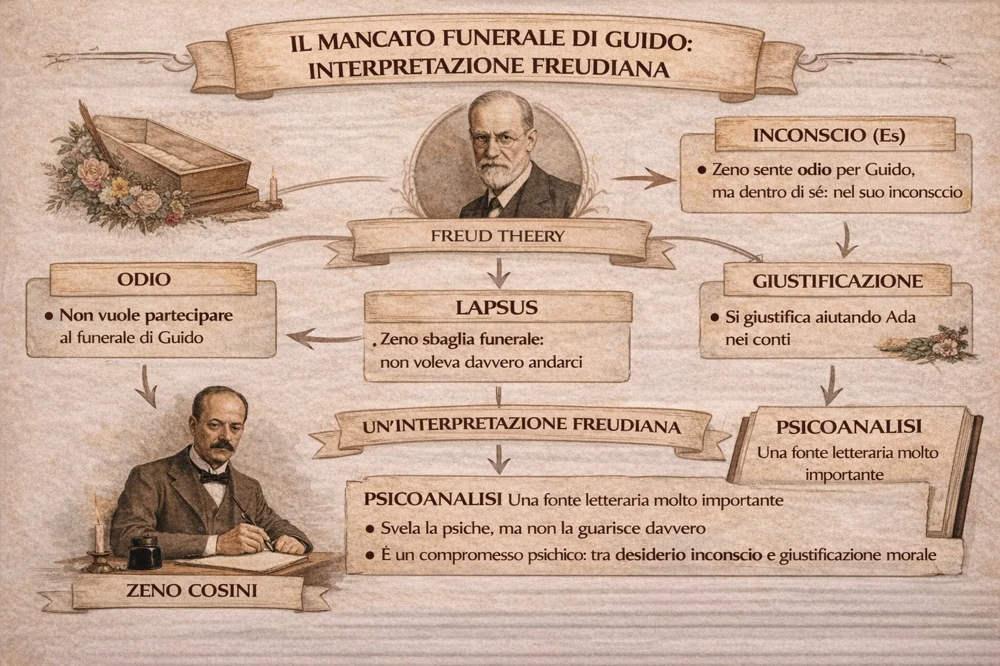

Lezione 1
La vita di Zeno e la struttura del romanzo
Cronologia reale e struttura tematica della Coscienza di Zeno
Questa PWA raccoglie un percorso completo su La coscienza di Zeno: lezioni sintetiche ma serie, mappe concettuali leggibili, navigazione rapida e consultazione offline della struttura essenziale del sito. Non è una vetrina ornamentale. È uno strumento didattico pensato per funzionare bene davvero su GitHub Pages, Android e iPad.
Installazione: su Android da Chrome usa “Installa app” o “Aggiungi a schermata Home”; su iPhone/iPad usa Condividi → “Aggiungi a Home”.

Ogni pagina contiene spiegazione didattica, mappa visiva e collegamenti rapidi alle altre sezioni.

Cronologia reale e struttura tematica della Coscienza di Zeno

Dalla verità storica alla verità soggettiva

Scienza, intellettualità e senso comune davanti a Zeno

Autorità, colpa e crisi delle certezze

La coscienza che paralizza l’azione

Interpretazione psicoanalitica del mancato funerale

Malattia, coscienza ed evoluzione in Svevo

Tecnica, malattia e apocalisse nella chiusa del romanzo

Ironia e senso di colpa nella coscienza di Zeno

Due movimenti dell’ironia nella modernità